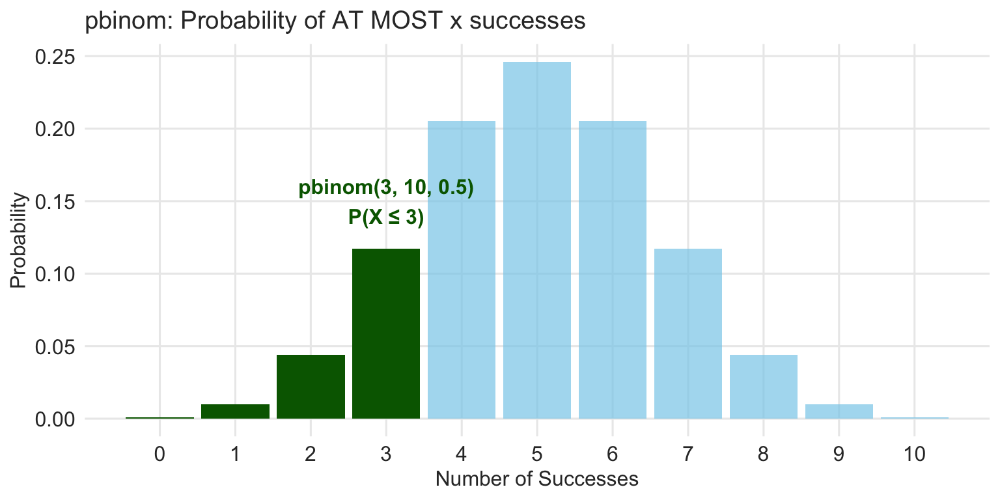

Muddy Points
Random Variables and Binomial Distribution
Overview
Thank you for your feedback on Monday’s lecture! The pacing feedback was excellent - 69% felt it was “about right” and 31% “slightly too fast,” which tells me most of you are keeping up well. I’ll continue with strategic pauses and check-ins to help everyone stay on track.
Several clear themes emerged from your muddy points. Let me address them:
What Do I Need to Memorize/Know How to Do?
The Question:
“What should we memorize in terms of formulas? Are we supposed to know how to do these formulas by hand, or using the R functions?”
The Answer:
For this course, I care about three things:
1. Conceptual understanding
You should be able to explain, in words:
- What kind of random variable you are working with (discrete vs continuous)
- When a binomial model is appropriate
- What the parameters mean (for example: n and p)
- What a probability, mean, or variance is describing in context
You do not need to reproduce derivations, but you should understand what the formulas are doing.
2. Using R correctly
You should be comfortable with:
- Choosing the right R function (
dbinom(),pbinom(), etc.) - Knowing what each argument represents
- Interpreting the output in words
For example:
- “Exactly k successes” →
dbinom() - “At most k successes” →
pbinom()
Being able to explain why you chose a function matters more than the numeric answer itself.
3. Explaining your reasoning
On homework and exams, you should be able to:
- Describe your approach in plain language
- Explain what distribution you used and why
- Interpret results in the context of the problem
What you are not expected to do
You do not need to:
- Memorize probability formulas
- Calculate probabilities by hand
- Derive distributions from scratch
- Memorize every symbol used on slides
Formulas are shown to build understanding and connect to R — not because I expect you to reproduce them from memory.
Variable Notation Confusion
The Issue:
“The way variables were switching from X to k was confusing. It would be helpful if there was a legend on each slide for what each variable means.”
Why This Happens:
Different contexts use different notation conventions:
- X = the random variable itself (e.g., “number of successes”)
- x or k = a specific value X might take (e.g., “exactly 3 successes”)
- n = number of trials
- p = probability of success on each trial
I’ll be more explicit about this on slides going forward.
Common Notation Guide
| Symbol | Meaning | Example |
|---|---|---|
| \(X\) | Random variable | “Number of heads in 10 flips” |
| \(x\) or \(k\) | Specific value | “Exactly 3 heads” |
| \(n\) | Number of trials | 10 flips |
| \(p\) | Probability of success | 0.5 for fair coin |
| \(\mu\) | Mean/Expected value | Average outcome |
| \(\sigma\) | Standard deviation | Spread of outcomes |
| \(\sigma^2\) | Variance | Squared spread |
Too Many Formulas / Feeling Abstract
The Concern:
“Felt like there were just a whole lot of formulas… Some of the formulas started to feel a bit abstract.”
My Response:
You’re absolutely right. There are a lot of formulas. Here’s how to think about them:
The Core Ideas (Not the Formulas)
For any distribution, we care about:
- What values can it take? (support)
- How likely is each value? (probability/density)
- What’s the typical value? (mean/expected value)
- How spread out is it? (variance/standard deviation)
For binomial specifically:
- “How many successes in n tries?” → use
dbinom()orpbinom() - That’s it. The formulas are just showing why R gives you those answers.
Plain Language Interpretations
I’ll make sure to add these after formulas. For example:
Formula: \(P(X = k) = \binom{n}{k}p^k(1-p)^{n-k}\)
Plain English: “The probability of getting exactly k successes in n trials, when each trial has probability p of success”
R Code: dbinom(k, size = n, prob = p)
Even Plainer: “Use this when you want to know: What are the chances of getting exactly this many successes?”
Variance of Linear Combinations
The Concern:
“Variance of linear combinations was confusing to me, especially if it will need to be applied to real/our data.”
My Response:
This is a very reasonable concern.
For this course, variance of linear combinations is not something you will be expected to apply directly to real data by hand.
What I want you to take away is the idea, not the formula:
- When you combine independent random variables, their variances add
- Standard deviations do not add directly
- In practice, software (R) handles these calculations for us
You will not be asked to derive or memorize variance formulas for linear combinations.
Later in the course, you will see variance show up in applied settings (for example, through standard errors and uncertainty in estimates), but at that point we will rely on:
Interpretation
Software output
Intuition about variability
not manual variance calculations.
Bottom line: Understand the concept that variances add, but don’t worry about doing these calculations by hand. This topic is covered in introductory probability courses because it is important in fields like finance and engineering, but in this course we focus on understanding the idea rather than doing the calculations by hand.
Clarifying Bernoulli Variance (Conceptual)
The Question:
“It is a bit unclear where the equation for the variance for the Bernoulli distribution came from. I don’t understand how it relates to other variance equations.”
My Response:
This is a great question.
The Bernoulli variance formula is not a new or special definition of variance. It comes from the same definition of variance we use for any random variable — it just simplifies nicely because a Bernoulli variable can only take two values (0 and 1).
What’s important to know:
- Variance always measures how spread out values are around the mean
- For a Bernoulli variable:
- The mean is \(p\)
- Outcomes are either 0 or 1
- Because of that simplicity, the general variance definition reduces to the compact result:
\[\text{Var}(X) = p(1 - p)\]
You do not need to derive this yourself. The key takeaway is the behavior of the variance:
- It is largest when outcomes are most uncertain (\(p\) near 0.5)
- Example: \(p = 0.5 \rightarrow \text{Var}(X) = 0.5(0.5) = 0.25\)
- It is smaller when outcomes are more predictable (\(p\) near 0 or 1)
- Example: \(p = 0.9 \rightarrow \text{Var}(X) = 0.9(0.1) = 0.09\) (less variable)
- Example: \(p = 0.1 \rightarrow \text{Var}(X) = 0.1(0.9) = 0.09\) (less variable)
We’ll continue to rely on this intuition and on R for calculations, rather than algebraic derivations.
R Functions Still Confusing
The Concern:
“I’m still a little confused on some of the different binomial functions in R, and pbinom’s link to p-values.”
Let Me Break This Down:
The Four Binomial Functions
# d = density/probability (exactly)
dbinom(x = 3, size = 10, prob = 0.5)
# "What's P(X = 3)? Probability of EXACTLY 3 successes"
# p = cumulative probability (at most)
pbinom(q = 3, size = 10, prob = 0.5)
# "What's P(X ≤ 3)? Probability of 3 OR FEWER successes"
# q = quantile (what value gives this cumulative probability?)
qbinom(p = 0.25, size = 10, prob = 0.5)
# "What value of x has 25% of the distribution below it?"
# r = random (generate random samples)
rbinom(n = 100, size = 10, prob = 0.5)
# "Simulate 100 draws from this distribution"Visual Guide

About p-values
Important: pbinom() calculates cumulative probabilities, but it’s not directly a p-value.
A p-value is “the probability of getting results as extreme or more extreme than what we observed, assuming the null hypothesis is true.”
We can use pbinom() to calculate p-values, but they’re not the same thing:
pbinom()= general cumulative probability function- p-value = specific probability used for hypothesis testing
We’ll cover this more when we get to hypothesis testing!
Expected Value Calculation Question
The Question:
“I didn’t understand the expected value (mean) calculations. Why does the value of the dice face factor into the equation since it’s an equal chance of rolling any value? Additionally, where did the 1/9 value come from?”
Let Me Walk Through This:
Fair Die Expected Value
For a fair 6-sided die, each outcome has probability 1/6:
\[E(X) = 1 \cdot \frac{1}{6} + 2 \cdot \frac{1}{6} + 3 \cdot \frac{1}{6} + 4 \cdot \frac{1}{6} + 5 \cdot \frac{1}{6} + 6 \cdot \frac{1}{6}\]
\[E(X) = \frac{1+2+3+4+5+6}{6} = \frac{21}{6} = 3.5\]
Why do the face values matter?
- Even though each face has equal probability (1/6), the values are different (1, 2, 3, 4, 5, 6)
- We’re calculating the average value we’d get in the long run
- Rolling a 6 contributes more to the average than rolling a 1!
Where did 1/9 come from?
I just made up the probabilities for the rolls with the unfair dice. I aimed to show that the probabilities don’t have to be the same for all possible outcomes.
- Rolls of 1, 2, 3, or 4 all had the same probability: \(1/9\)
- A roll of 5 had a probability of \(2/9\)
- A roll of 6 had a probability of \(3/9\)
- Probabilities add to 1. Check: \(1/9 + 1/9 + 1/9 + 1/9 + 2/9 + 3/9 = 1\)
The dice is loaded toward higher numbers.
The big picture for expected value
Expected value is best thought of as a long-run average, not a prediction of what will happen on a single trial.
- It combines all possible values of a random variable
- Each value is weighted by how likely it is
- Larger values contribute more to the average than smaller values
This same idea applies to any random variable (not just dice) and is why expected value shows up throughout statistics.
You do not need to compute expected values by hand beyond simple examples like this. In practice, we’ll often:
- rely on formulas (for known distributions), or
- let software do the calculation for us.
The important skill is understanding what expected value represents, not the mechanics of summing terms.
Questions?
If anything is still muddy, please:
- Come to office hours
- Ask in class on Wednesday
Thanks for the thoughtful feedback! 🎲